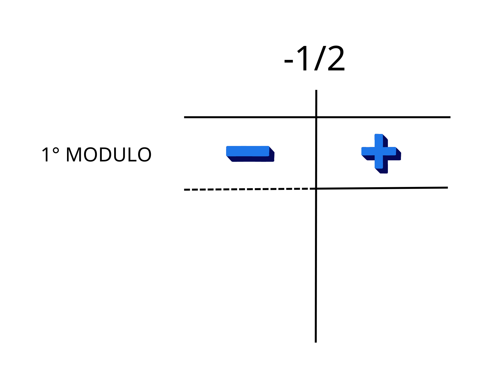
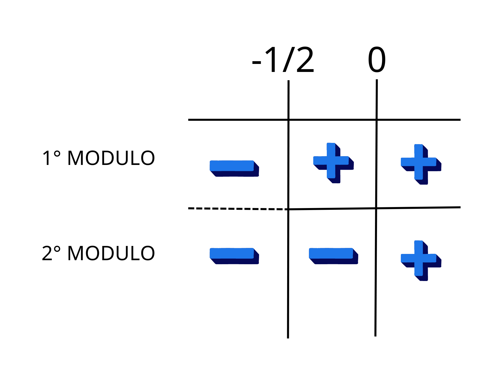

Un’equazione con modulo, come dice il suo nome, è un’equazione in cui appaiono uno o più moduli.
Esempi di equazioni con modulo sono i seguenti:
• \(|x+4| = 3\)
• \(3-2|x| = 0\)
• \(|x+4| = |x+3|+x\)
Non sono invece equazioni con modulo le seguenti:
• \(x+4=18x +3 \) - perché non appare alcun modulo
• \(3x+|2|=0\) - perché non essendoci alcun incognita dentro il modulo possiamo ricondurla direttamente ad una equazione normale (in questo caso a \(3x+2=0\))
Iniziamo parlando delle equazioni in cui compare un solo modulo. Nella forma più generale esse si presentono nella seguente forma:
\(|A(x)| = B(x)\)
Dove \(A(x)\) e \(B(x)\) sono funzioni di \(x\).
Iniziamo considerando un caso particolare che risulta più semplice del caso generale: guardiamo cosa succede quando \(B(x)\) è una costante. Chiamiamo questa costante \(k\). Avremo quindi:
\(|A(x)|= k\)
Dobbiamo distinguere due casi: se \(k\) è negativo o positivo. Il primo caso è il più semplice perché siccome il valore assoluto di qualcosa è sempre positivo è impossibile che sia uguale a qualcosa di negativo.
Quindi se \(k<0\) l’equazione è impossibile.
Se invece \(k\) è positivo basta mettere un \(\pm\) davanti a \(k\) per togliere il modulo. Questo perché siccome \(k\) non varia a seconda di\(x\) , per avere l’equazione verificata dobbiamo avere:
\(A(x) = k\)
Oppure:
\(A(x) = -k\)
Che possiamo sintetizzare in:
\(A(x) = \pm k\)
Quindi per risolvere questa tipologie di equazioni con modulo dobbiamo risolvere le due equazioni che abbiamo trovato e prendere tutte le soluzioni.
Facciamo un esempio:
• \(|x+4|=3\)
Dobbiamo risolvere le due equazioni.
Cominciamo risolvendo la prima:
\(x+4=3\)
\(x=-1\)
Passiamo alla seconda:
\(x+4=-3\)
\(x=-7\)
Quindi le soluzioni dell’equazione con modulo saranno \(3\) e \(-7\).
Tutto qua, i calcoli potrebbero essere più complicati, ma il procedimento è questo. Se invece abbiamo un’equazione tipo:
\(|x^5+2|=-2 \)
Sappiamo subito che è impossibile, perché qualunque sia l’argomento del modulo, la parte a sinistra dell’uguale sarà positiva e non potrà mai e poi mai essere uguale a \(-2\).
Passiamo al caso generale:
Abbiamo detto che in generale un’equazione con un modulo appare nella seguente forma:
\(|A(x)|=B(x)\)
Quindi vediamo che risolverle quando \(B(x)\) non è costante.
Per fare ciò dividiamo il problema in due casi, quando \(A(x)\) è maggiore o uguale a \(0\) e quando \(A(x)\) è minore di \(0\). Trovate le soluzioni dei due casi ci basterà unirle per trovare la soluzione dell’equazione con modulo.
Partiamo dal primo caso:
Se \(A(x)\) è maggiore o uguale a \(0\) abbiamo:
\(|A(x)|=A(x)\)
Quindi sostituendo:
\(A(x) =B(x)\)
Risolvendo otteniamo le soluzioni. Notiamo che non ci sono non dobbiamo preoccuparci di \(B(x)\) perché se \(B(x)=A(x)\) e \(A(x)\) è positivo anch’esso deve esserlo.
Quindi otteniamo il sistema:
\(\begin{cases}A(x) \geq 0\\A(x)=B(x)\end{cases} \)
Guardiamo ora invece a quando \(A(x)\) è negativo. Se \(A(x) < 0\) abbiamo:
\(|A(x)|=-A(x)\)
Sostituendo:
\(-A(x)=B(x)\)
Notiamo che anche questa volta non ci sono problemi sul segno di \(B(x)\), perché se \(A(x)\) è negativo, allora \(-A(x)\) è positivo e quindi l’equazione precedente ci assicura che anche \(B(x)\) lo sarà.
Quindi otteniamo il sistema:
\(\begin{cases}A(x) < 0\\-A(x)=B(x)\end{cases}\)
Unendo i due sistemi abbiamo che le soluzioni dell’equazione con modulo saranno l’unione dei soluzioni dei sistemi, ovvero:
\(\begin{cases}A(x) \geq 0\\A(x)=B(x)\end{cases}\) \( \cup \) \(\begin{cases}A(x) < 0\\-A(x)=B(x)\end{cases}\)
Con questa formula potrete risolvere qualsiasi equazione con un modulo!
Vediamo ora come risolvere equazioni dove compaiono \(2\) o più moduli.
Ecco alcuni esempi:
• \(|2x+1|-4x+|x| = 9\)
• \(|3-2x| - 5x = |3x-1|\)
• \(|x^2-x-3|+4x-|x|=0\)
Per risolvere questo tipo di equazioni bisogna studiare il segno dell’espressione in ogni modulo singolarmente e poi trovare le possibili soluzioni per i vari casi.
Prendiamo come esempio la prima equazione riportata sopra:
\(|2x+1|-4x+|x| = 9\)
In questa equazione sono presenti \(2\) moduli, prima studiamo il primo modulo:
\(|2x+1|\)
Sappiamo che il modulo sarà sempre positivo, ma ci serve il valore di \(x\) per il quale si annulla per capire se cambierà segno o meno ai suoi termini.
\(2x+1=0 \longrightarrow x=-{1\over 2}\)
Ora sappiamo che per le \(x\) minori di \(-{1\over 2}\) l’espressione all’interno del modulo sarà negativa e quindi il modulo cambierà segno a tutti i termini per renderla positiva.
Se \(x \geq -{1\over 2}\) :
\(|2x+1| = 2x+1\)
Se \(x < -{1\over 2}\) :
\(|2x+1| = -(2x+1) =\)\(-2x-1\)
Ci annotiamo i risultati nel seguente grafico dei segni e procediamo nello studio del prossimo modulo.
Il modulo successivo è, \(|x|\) in questo caso sarà facile capire che si annulla per \(x=0\) e di conseguenza:
Se \(x \geq 0\) :
\(|x| = x\)
Se \(x<0\) :
\(|x|=-x\)
Lo scriviamo nel grafico dei segni e procediamo con la risoluzione dell’equazione.
Ora ci basterà leggere il grafico e per ogni situazione scrivere l’equazione corrispondente e fare l’unione delle soluzioni accettabili di tutte le equazioni.
Se \(x< -{1 \over 2}\) :
\(-2x-1-4x-x=9\)
\(x= -{10 \over 7}\) - ACCETTABILE
Se \(-{1\over 2} \leq x < 0\) :
\(2x+1-4x-x = 9\)
\(x = -{8 \over 3}\) - NON accettabile perché non rispetta la condizione \(-{1\over 2} \leq x < 0\)
Se \(x \geq 0\) :
\(2x+1-4x+x = 9\)
\(x=-8\) - NON accettabile perché non rispetta la condizione \(x \geq 0\)
La soluzione dell’equazione sarà quindi \(x= -{10 \over 7}\)
Passiamo ora all’ultimo caso che analizzeremo in questa lezione, ovvero quello di uno o più moduli dentro un modulo.
Vediamo alcuni esempi:
• \(|x-|x^2-3|+2| = 3\)
• \(||3x-1|+x-|2x|+5| = |x|\)
• \(2x-||x-3|-x| = 8\)
Per risolvere questo tipo di equazione basta applicare i metodi visti in precedenza uno dopo l’altro.
Potrebbero le soluzioni podrebbero essere molte, soprattutto se sono presenti tanti moduli.
Prendiamo il secondo esempio, dove è necessario usare due dei metodi visti in precedenza:
\(||3x-1|+x-|2x|+5| = |x|\)
La prima cosa da notare è che entrambi i membri dell’equazione sono moduli e quindi, come prima avremo che il primo membro è uguale a \(\pm\) il secondo membro.
Quindi otterremo queste \(2\) equazioni:
• \(|3x-1|+x-|2x|+5 = x\)
• |3x-1|+x-|2x|+5 = -x
Ora risolviamo entrambe separatamente con il metodo già visto e troviamo le soluzioni.